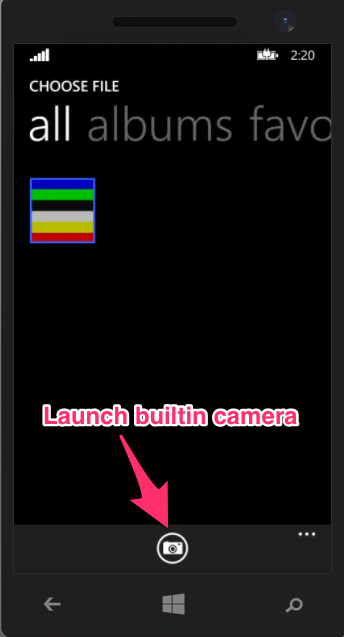

Camera and Photo Gallery APIs
Objective
In this chapter, you'll learn how to capture an image from the camera, use it in an app, and save it to the gallery or filesystem. You'll also explore the closely related gallery APIs, which let your users grab images from their photo albums for use within your app.
Contents
The APIs that you use to access the camera and photo gallery are very similar. Both use the same function signature, though the actual method names vary. We'll start with a look at the camera API then see how you apply the same techniques to the gallery.
Camera
You can access both the rear-facing and front-facing cameras in devices that have them. You can capture still images and video from the camera. Then you can use the resulting images in your app, save them to the file system, upload them, or save them to the gallery. You open the camera by calling the showCamera() method. When doing so, you define three callback functions that are called for the success, cancel, and error events, as shown here:
// This example is only able to capture video on the iOS platform.// To capture video on the Android platform, see the Android Capture Video Example below.Titanium.Media.showCamera({ success:function(event) { // called when media returned from the camera Ti.API.debug('Our type was: '+event.mediaType); if(event.mediaType == Ti.Media.MEDIA_TYPE_PHOTO) { var imageView = Ti.UI.createImageView({ width: win.width, height: win.height, image: event.media }); win.add(imageView); } else { alert("got the wrong type back ="+event.mediaType); } }, cancel:function() { // called when user cancels taking a picture }, error:function(error) { // called when there's an error var a = Titanium.UI.createAlertDialog({title:'Camera'}); if (error.code == Titanium.Media.NO_CAMERA) { a.setMessage('Please run this test on device'); } else { a.setMessage('Unexpected error: ' + error.code); } a.show(); }, saveToPhotoGallery:true, // allowEditing and mediaTypes are iOS-only settings allowEditing: true, mediaTypes: [Ti.Media.MEDIA_TYPE_VIDEO,Ti.Media.MEDIA_TYPE_PHOTO]});The saveToPhotoGallery property controls whether the photo or video is automatically saved to the device's photo gallery. Using Ti.Filesystem you could save to the filesystem in addition to or in place of saving to the gallery. Because the user can delete items from the gallery separately from your app, you should save media to the filesystem if your app will depend on its availability later.
Some other useful properties include:
-
autohide (boolean) if the camera should auto hide after the media capture is completed (defaults to true) (iOS only)
-
animated (boolean) if the dialog should be animated (defaults to true) upon showing and hiding (Android and iOS only)
-
allowEditing (boolean) if the media should be editable after capture in the UI interface (iOS only)
-
mediaTypes an array of media type constants supported by the capture device UI (iOS only)
-
videoMaximumDuration (float) duration on how long in milliseconds to allow capture before completing (iOS only)
-
videoQuality (Ti.Media constant) to indicate the video quality during capture (iOS only)
-
showControls (boolean) to indicate if the built-in UI controls should be displayed (iOS only)
-
overlay (Ti.UI.View) which is added as an overlay to the camera UI (on top)
-
transform a transformation matrix that applies to the camera UI (not to the media returned) (iOS only)
You can check for the availability of the camera with the Titanium.Media.isCameraSupported property: it's false if the device has no camera. The simulator/emulator does not have camera support. Other devices without cameras include 3rd generation and older iPods, the Nook Color, and Kindle Fire.
Front/rear camera support
You can access both the front and rear facing cameras, if a device has such cameras. The code snippet below shows one way you might do this. Key properties are the Ti.Media.CAMERA_REAR and Ti.Media.CAMERA_FRONT as well as the Ti.Media.switchCamera() method.
var cameras = Ti.Media.availableCameras;for (var c = 0; c < cameras.length; c++) { // if we have a rear camera ... we add switch button if (cameras[c] == Ti.Media.CAMERA_REAR) { overlay.add(cameraType); cameraType.addEventListener('click',function() { if (Ti.Media.camera == Ti.Media.CAMERA_FRONT) { cameraType.title = "front"; Ti.Media.switchCamera(Ti.Media.CAMERA_REAR); } else { cameraType.title = "rear"; Ti.Media.switchCamera(Ti.Media.CAMERA_FRONT); } }); break; }}Android Capture Video Example
The Titanium SDK does not expose a way to capture video on the Android platform using the Titanium.Media API. Instead, you need to use an Android intent to start a new activity that captures video.
The following example creates an Android intent to capture video. This intent is used to start a new activity, which launches the camera to record video. After the user stops recording, the video is saved to the device's gallery. The callback retrieves the URI of the video media and stores the reference in a global variable. Using the global variable, you can launch the video in a media player or save the content to a different location.
// App UIvar win = Titanium.UI.createWindow({ backgroundColor: '#fff', layout: 'vertical'});var recordButton = Titanium.UI.createButton({ title: 'Record Video', top: '10dp'});win.add(recordButton);var playButton = Titanium.UI.createButton({ title: 'Play Recorded Video', visible: false, top: '10dp'});win.add(playButton);win.open();// Holds a reference to the media URIvar videoURL = null;recordButton.addEventListener('click', function() { // Start an activity with an intent to capture video // http://developer.android.com/reference/android/provider/MediaStore.html#ACTION_VIDEO_CAPTURE var intent = Titanium.Android.createIntent({ action: 'android.media.action.VIDEO_CAPTURE' }); win.activity.startActivityForResult(intent, function(e) { if (e.resultCode == Ti.Android.RESULT_OK) { if (e.intent.data != null) { // If everything went OK, save a reference to the video URI videoURL = e.intent.data; playButton.visible = true; } else { Ti.API.error('Could not retrieve media URL!'); } } else if (e.resultCode == Ti.Android.RESULT_CANCELED) { Ti.API.trace('User cancelled video capture session.'); } else { Ti.API.error('Could not record video!'); } });});playButton.addEventListener('click', function(){ var player = Ti.Media.createVideoPlayer({ url: videoURL, autoplay: true}); win.add(player);});
Gallery
You open the native gallery by calling the openPhotoGallery() method. As with the camera, you define three callback functions that are called for the success, cancel, and error events. The camera and gallery methods are so similar that I won't repeat the code block here. Just replace showCamera() with openPhotoGallery() in the code block above and you'll be good to go.
Some other useful properties include:
-
animated (boolean) if the dialog should be animated (defaults to true) upon showing and hiding
-
allowEditing (boolean) if the media should be editable after capture in the UI interface
-
saveToPhotoGallery (boolean) whether modified media should be saved back to the gallery, generally only useful with allowEditing=true
-
mediaTypes an array of media type constants supported by the capture device UI
-
showControls (boolean) to indicate if the built-in UI controls should be displayed
-
overlay (Ti.UI.View) which is added as an overlay to the camera UI (on top)
-
transform a transformation matrix that applies to the camera UI (not to the media returned)
-
(iPad only) popoverView (Ti.UI.View) to position the photo gallery popover a specific view
-
(iPad only) arrowDirection control the type of arrow and position of the gallery
Getting images into the simulator/emulator's gallery
The photo gallery on the simulator/emulator is of course empty to start. If you'll be testing photo gallery code, you'll need to put some images there. You can do so by following this procedure:
-
Open the gallery in the simulator/emulator, then close it. You have to do this at least once to initialize its data storage structures.
-
Find an image to save. For example, open the web browser, search for, and display an image.
-
Long-press on the image, when you release, you should get a menu of options.
-
Tap Save Image (or your device's equivalent button) to save the image to the gallery.
Windows Development Considerations
In order to enable camera and audio recording for Windows Phone, you need to provide appropriate Capabilities in your tiapp.xml. Windows Phone users are prompted to grant or deny permission when your application attempt to use it.
Grant access to video stream and audio stream
<ti:app> ... <windows> ... <Capabilities> <DeviceCapability Name="microphone" /> <DeviceCapability Name="webcam" /> </Capabilities> ... </windows> ...</ti:app>Grant access to pictures library
<ti:app> ... <windows> ... <Capabilities> <Capability Name="picturesLibrary" /> </Capabilities> ... </windows> ...</ti:app>For more information about audio configuration in tiapp.xml, see Windows-specific section in tiapp.xml and timodule.xml Reference.
Displaying builtin camera for Windows
For Windows 10 Mobile
As of Titanium 5.4.0, you can launch "default camera UI" that is builtin to the platform when you use Ti.Media.showCamera(options) without specifying overlay property. This Windows builtin camera UI provides same look & feel that Microsoft Windows Camera app provides. Note that this builtin camera UI is supported as of Windows 10 apps including Mobile.
var imageView = TI.UI.createImageView();Ti.Media.showCamera({ mediaTypes: [Ti.Media.MEDIA_TYPE_PHOTO], success: function (e) { imageView.image = e.media; }, error: function (e) { Ti.API.error(JSON.stringify(e)); }});For Windows Phone 8.1
Displaying default camera UI on Windows Phone 8.1 is not supported natively, but there is a workaround for it. On Windows Phone 8.1, Ti.Media.openPhotoGallery shows builtin photo chooser from the photo gallery, and there's a button to launch builtin Windows camera.

var imageView = TI.UI.createImageView();Ti.Media.openPhotoGallery({ mediaTypes: [Ti.Media.MEDIA_TYPE_PHOTO], success: function (e) { imageView.image = e.media; }, cancel: function () { }, error: function (e) { Ti.API.error(JSON.stringify(e)); }});Hands-on Practice
Goal
In this activity, you will write an app that will capture an image from the camera and display it in a view. If the device doesn't have a camera, your app should display the gallery picker instead.
Steps
-
Create a new project named PhotoTest.
-
On tab1 of the default project, replace the label with an ImageView that is 300x300 points positioned 5 points from the top.
-
Add a button that is 100x50 positioned 5 points from the bottom.
-
When the button is clicked, show the camera if it's available, otherwise open the photo gallery. You'll need three callbacks--write your code to reuse the same three functions to minimize duplicated code. You'll need these callbacks:
-
Success: set the ImageView's image property to the media returned from the camera or gallery. Output the mediaType to the info console.
-
Cancel: don't do anything in this function
-
Error: Display an alert dialog box showing the error.code describing why the operation failed.
-
-
Open the simulator/emulator and save at least one photo to it, following the steps above.
-
Build the app and run it on the simulator/emulator. The gallery should open.
-
(Optional) Install the app onto a device and run it from there. The camera should open.
Summary
In this chapter, you learned how to capture an image from the camera, use it in an app, and save it to the gallery or filesystem. You also explored the closely related gallery APIs, which let your users grab images from their photo albums for use within your app.